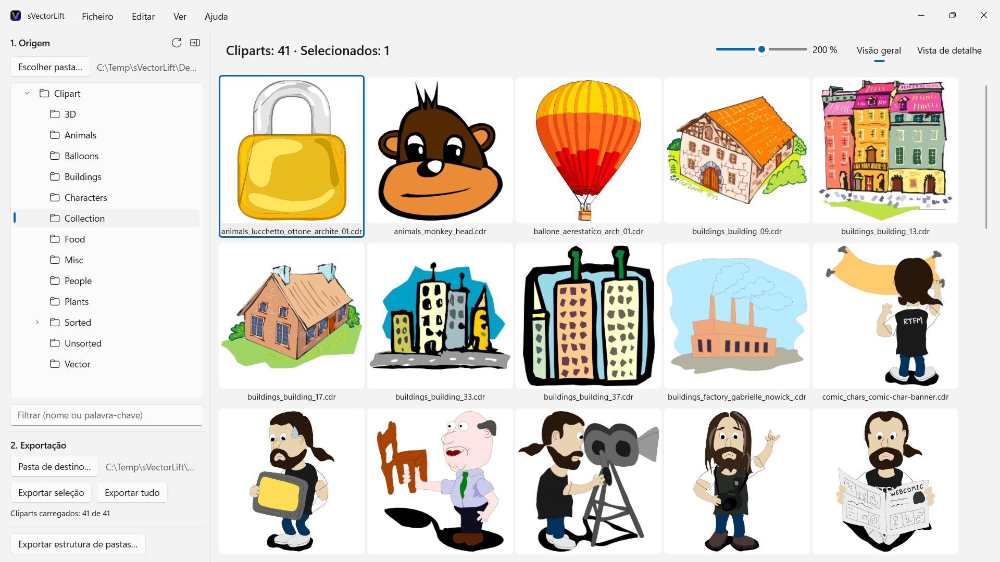
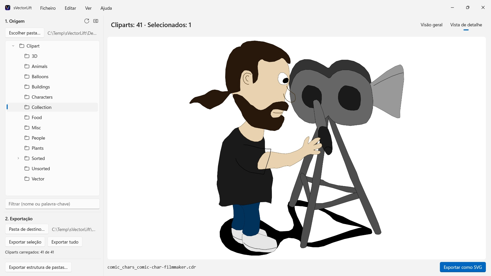

sVectorLift
Abre CorelDRAW 6–9 (.cdr), CMX incluindo CDRX, WMF, CGM, QuickDraw 3D e SVG
Milhares de cliparts vintage em CDs do CorelDRAW, presos em formatos que quase nenhum programa abre. O sVectorLift mostra coleções inteiras num relance e transforma-as em verdadeiros SVG, prontos a usar hoje.
 Veja o vídeo – 3 minutos no YouTube, em inglês com legendas em português
Veja o vídeo – 3 minutos no YouTube, em inglês com legendas em português


Algures numa prateleira está um CD cheio de cliparts que comprou em tempos. Os ficheiros continuam lá — mas quase nenhum programa do seu PC os consegue abrir, e ainda menos lhe mostram a coleção inteira num relance.
Idiomas suportados (25): Deutsch · English · Español · Français · Italiano · Nederlands · Português (Brasil) · Português (Portugal) · Svenska · Norsk · Suomi · Polski · Čeština · Hrvatski · Magyar · Română · Türkçe · Русский · Українська · فارسی · ไทย · 日本語 · 한국어 · 简体中文 · 繁體中文
A aplicação segue o idioma de apresentação do Windows.
O sVectorLift volta a tornar estas imagens utilizáveis. Reconstrói cada desenho como um verdadeiro SVG: nítido em qualquer tamanho, editável e pronto a usar no Illustrator, Affinity, Inkscape, Figma — ou no seu site. Não apenas para voltar a ver. Para voltar a usar. É isso que significa o «Lift» do nome: arte vetorial vintage, elevada ao nível das ferramentas com que trabalha hoje.
FORMATOS SUPORTADOS
- Documentos do CorelDRAW (.cdr), versões 6 a 9
- Corel Binary Meta File (.cmx) — incluindo a primeira variante CDRX, com a qual outras ferramentas falham
- Windows Metafile (.wmf)
- Computer Graphics Metafile (.cgm)
- QuickDraw 3D Metafiles (.3dm, .3dmf), renderizados como imagem
- Scalable Vector Graphics (.svg), mostrados diretamente
Muitos ficheiros com a extensão .cdr não são, na verdade, documentos do CorelDRAW, mas sim CMX — e é precisamente aí que os conversores habituais falham. O sVectorLift lê ambos.
O sVectorLift foi concebido para coleções de clipart: desenhos, símbolos, ilustrações. Não é um programa de paginação e não pretende reproduzir brochuras de várias páginas nem artes finais para impressão.
VERDADEIRA CONVERSÃO VETORIAL
Aqui não se fotografa uma miniatura de pré-visualização. O sVectorLift lê o próprio desenho: traçados e curvas de Bézier, cores de preenchimento, gradientes, contornos e padrões de traço, preenchimentos de padrão e textura, fotografias incorporadas e objetos de texto. O resultado são verdadeiros dados vetoriais, que pode redimensionar, recolorir e editar — e não a imagem de um desenho.
As imagens exclusivamente raster são, em vez disso, exportadas como PNG, para que nada se perca.
Precisa de uma imagem em vez de arte vetorial? «Exportar como PNG» e «Exportar como JPG» convertem qualquer desenho numa imagem, incluindo ficheiros SVG — no tamanho que escolher nas Definições.
EXPLORAR A COLEÇÃO
- Árvore de pastas de toda a coleção de clipart, incluindo subpastas
- Grelha de miniaturas vetoriais nítidas, com tamanho ajustável de forma contínua
- Vista de detalhe — com as teclas de seta para percorrer a pasta
- Filtrar por nome ou palavra-chave
- Seleção múltipla como no Explorador de Ficheiros: clique, Ctrl+clique, Shift+clique, retângulo de seleção, Ctrl+A
- Abrir um ficheiro individual diretamente a partir do Explorador de Ficheiros («Abrir com» ou duplo clique)
- Pastas recentes, que memorizam a subpasta e o ficheiro selecionado
- Exportar a seleção ou a pasta inteira de uma só vez
- Converter estruturas de pastas inteiras, incluindo subpastas, de uma só vez — a estrutura é mantida na pasta de destino
- Alterar o nome, mostrar no Explorador de Ficheiros, mover para a Reciclagem
- Reorganizar a coleção arrastando e largando sobre uma pasta da árvore — com as regras do Explorador de Ficheiros, Ctrl para copiar, Shift para mover, e anular com Ctrl+Z; também de e para o Explorador de Ficheiros
RÁPIDO E ECONÓMICO
As miniaturas são calculadas apenas para o que está a ver — em segundo plano e com memória cache. As pastas grandes abrem-se de imediato, em vez de passarem minutos a processar milhares de ficheiros.
Tudo fica no seu PC. Sem ligações de rede, sem contas, sem recolha de dados.
CorelDRAW é uma marca da Corel Corporation. O sVectorLift é um programa independente, sem qualquer ligação à Corel.
- Requer Windows 11 ou posterior
- 24 idiomas
- Suporte: SwiftAppsBavaria@gmx.net
- Política de Privacidade